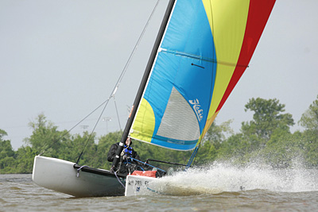
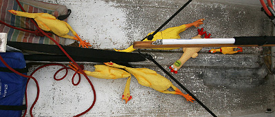

Featured Photo Galleries  "Too Windy To Race"
April 15, 2012The first race day of 2012, was cancelled due to too much wind. A few souls braved the gusts to honor the first race day of the year.
 "The Chicken Race of 2009"
October 25, 2009
The race might go down as one of the most fiersly contested battles a-sea as man (and woman) and boat hurled and dodged many a rubber chicken that day. Oh to be there again as the Chicken Man came sailing in!
2014
July 27 2014 — Race Day #1
July 27 2014 — Race Day #2
July 27 2014 — Race Day #3
July 27 2014 — Race Day #4
July 27 2014 — Race Day #5
2008
Recap of 2008 Season
October 26, 2008 - Land Sailing
2007
October 9, 2007 - Race Day
September 23, 2007 - Race Day
2006
Best of 2006
2005
Naval Battle
Chicken Race
Best of 2005